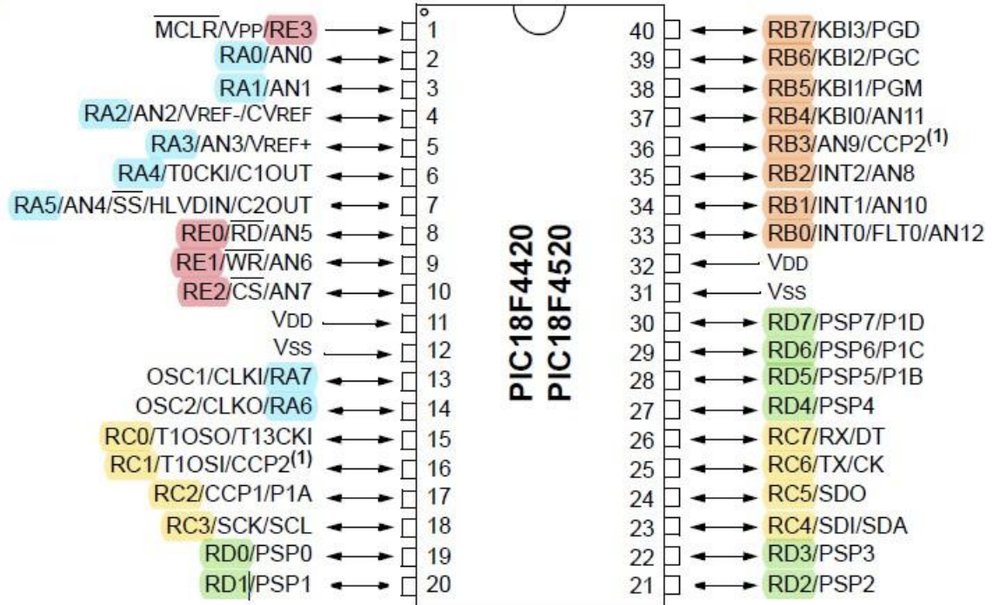
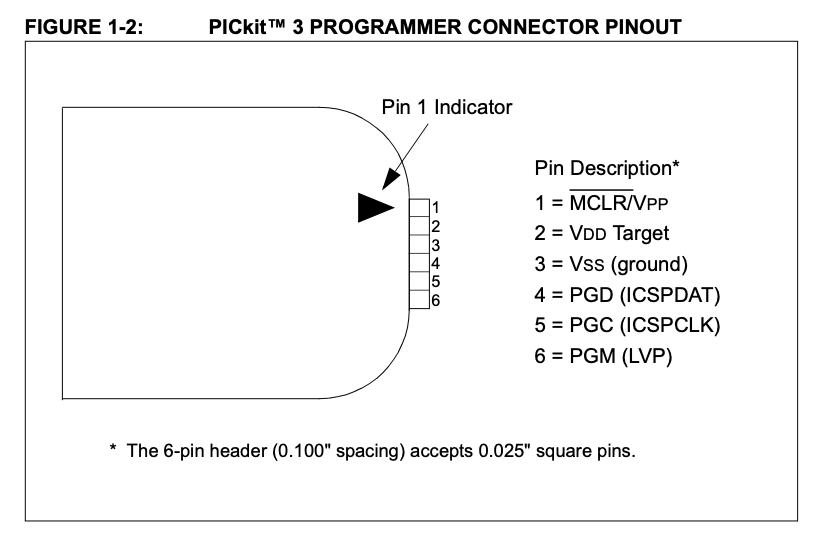

PIC18F4520 HAL Guide
硬體抽象層（Hardware Abstraction Layer，HAL）把常用的腳位、計時和通訊操作包成 C 函式。遇到接線、多個周邊共用計時器，或要直接設定中斷時，仍要看晶片對應的硬體功能。
Getting Started
在 MPLAB 專案選擇 PIC18F4520 和 MPLAB XC8 C 編譯器。每個韌體專案只在一個 .c 檔引入下列兩個標頭檔。設定檔提供晶片的組態位元，函式庫用 putch() 和 getch() 把 C 標準輸出與輸入接到序列埠。
使用 Visual Studio Code 編輯時，建議安裝 Microsoft 的 C/C++ 擴充套件。開啟工作區設定，搜尋 C_Cpp.errorSquiggles 並設為 disabled。
來源檔位於儲存庫根目錄下兩層時（如 dir/subdir/app.c），使用 ../../lib/。深度不同時，調整 #include 中的 ../ 層數。
#include "../../lib/pic18f4520_config.h"
#include "../../lib/pic18f4520_hal.h"
void main(void) {
halBegin();
pinMode(PIN_RD0, OUTPUT);
while (1) {
digitalToggle(PIN_RD0);
delayMs(500);
}
}把發光二極體（Light-Emitting Diode，LED）接到 RD0，就會每約 0.5 秒切換亮滅。halBegin() 會切換到內部振盪器、把多功能腳位預設設為數位、啟用高低中斷優先權模式，並啟動 Timer1。
預設振盪頻率 HAL_FOSC_HZ 為 500,000 Hz。要修改，在引入 HAL 前用 #define HAL_FOSC_HZ 1000000UL 之類的設定。支援 125、250、500 kHz，以及 1、2、4、8 MHz。變更後要重新確認通訊速率和脈波頻率。
Chip Configuration (pic18f4520_config.h)
編譯器用 #pragma config 寫入晶片啟動時讀取的組態位元。OSC = INTIO67 選內部振盪器。WDT = OFF 關閉看門狗計時器（Watchdog Timer），LVP = OFF 關閉低電壓燒錄（Low-Voltage Programming）。PBADEN = OFF 讓 B 埠共用類比功能的腳位在重設時預設為數位。CCP2MX = PORTC 把第二組捕捉、比較與脈波寬度調變模組（Capture/Compare/PWM，CCP）接到 RC1。
#ifndef PIC18F4520_CONFIG_H
#define PIC18F4520_CONFIG_H
#pragma config OSC = INTIO67
#pragma config WDT = OFF
#pragma config LVP = OFF
#pragma config PBADEN = OFF
#pragma config CCP2MX = PORTC
#endifBuild / Flash / Monitor
在儲存庫根目錄執行 make new（需要 Python 3.9 以上），輸入專案目錄並逐層確認建立。產生的 main.c 和 makefile 會依目錄深度設定 lib/ 的路徑。
將 Makefile 放在 main.c 同層。若工具安裝路徑不同，調整 XC8、DFP 和 IPE_DIR。
完整 Makefile
SHELL := /bin/bash
XC8 ?= /Applications/microchip/xc8/v4.00/bin/xc8-cc
DFP ?= $(HOME)/.mchp_packs/Microchip/PIC18Fxxxx_DFP/1.8.178/xc8
IPE_DIR ?= /Applications/microchip/mplabx/v6.20/mplab_platform/mplab_ipe
IPECMD ?= $(IPE_DIR)/bin/ipecmd.sh
BOOST_PORT ?= 2012
SCREEN ?= /usr/bin/screen
BAUD ?= 9600
TARGET_POWER ?= -W5.0
DEVICE := 18F4520
.PHONY: connect disconnect flash monitor clean
.DELETE_ON_ERROR:
export HEX PORT BAUD TARGET_POWER
out/main.hex: main.c ../../lib/pic18f4520_config.h \
../../lib/pic18f4520_hal.h
mkdir -p out/.xc8
cd out/.xc8 && "$(XC8)" -mcpu=$(DEVICE) "-mdfp=$(DFP)" -O1 "$(abspath $<)" -o main.elf
mv out/.xc8/main.hex "$@"
clean:
rm -rf out/.xc8 out/main.hex
define terminal_command
fail() { printf '%s\n' "$$*" >&2; return 1; }
tty_mode= tmp=
restore() {
[[ -z "$$tmp" ]] || rm -r "$$tmp"
[[ -z "$$tty_mode" ]] || stty "$$tty_mode"
}
trap restore EXIT
if [[ -t 0 && -t 2 ]]; then
tty_mode=$$(stty -g)
stty opost onlcr
fi
choose() {
local missing="$$1" prompt="$$2" PS3=': ' COLUMNS=1
shift 2
case $$# in
0) fail "$$missing" ;;
1) selected=$$1 ;;
*) printf '%s\n' "$$prompt" >&2
select selected; do [[ -n "$$selected" ]] && return 0; done
return 1 ;;
esac
}
if [[ "$$0" == monitor ]]; then
selected="$${PORT:-}"
if [[ -z "$$selected" ]]; then
shopt -s nullglob
choose 'No USB serial ports found. Set PORT to select one explicitly.' 'Select a serial port' \
/dev/cu.usbserial* /dev/cu.usbmodem* /dev/cu.wchusbserial* /dev/cu.SLAB_USBtoUART*
fi
[[ -c "$$selected" ]] || fail "Serial port not found: $$selected"
"$(SCREEN)" "$$selected" "$$BAUD"
exit 0
fi
port="$(BOOST_PORT)"
ipe=$$(cd "$(IPE_DIR)" && pwd -P)
state="$$HOME/.mchp_ipe/pic18f4520-$$port.session"
marker="$$HOME/.mchp_ipe/$$port.ini"
power="$$TARGET_POWER"
[[ "$$port" =~ ^[1-9][0-9]{0,4}$$ ]] && (( port <= 65535 )) || fail "Invalid Boost port: $$port"
valid_power() { [[ -z "$$1" || "$$1" =~ ^-W([0-9]+(\.[0-9]+)?)?$$ ]]; }
valid_power "$$power" || fail 'Set TARGET_POWER to a voltage option such as -W5.0, or leave it empty for external power.'
listener() { lsof -wanPt -iTCP:"$$port" -sTCP:LISTEN || :; }
is_boost() {
[[ "$$1" =~ ^[0-9]+$$ && -e "$$marker" ]] &&
[[ "$$(ps -ww -p "$$1" -o command=)" == *" -jar $$ipe/ipecmd.jar" ]]
}
boost() (
. "$$ipe/jdkloc" && cd "$$ipe" || exit 1
export PATH="$$ipe/../bin:$$PATH"
exec /usr/bin/sandbox-exec -p '(version 1) (allow default) (deny network-inbound (remote ip "*:*")) (allow network-inbound (remote ip "localhost:*"))' \
"$$jdkhome/bin/java" -jar ipecmdboost.jar "-OY$$port" "$$@"
)
check_ipe() {
printf 'If MPLAB IPE is connected, click Disconnect or close MPLAB IPE, then try again.\n' >&2
}
disconnect_session() {
[[ "$$(listener)" == "$$1" ]] && is_boost "$$1" || { fail 'The Boost session changed. Try again.'; return 1; }
boost -OQ || :
for ((attempt = 0; attempt < 20; ++attempt)); do
if [[ "$$(listener)" != "$$1" && ! -e "$$marker" ]]; then
rm -f -- "$$state"
return 0
fi
sleep 0.1
done
fail "Boost did not disconnect from port $$port."
}
connect_session() {
[[ -z "$$(listener)" && ! -e "$$marker" ]] ||
{ fail "Boost port $$port is in use or has stale state. Choose another BOOST_PORT."; return 1; }
if ! boost -P$(DEVICE) -TPPK3 $${power:+"$$power"} -OK -OL; then
local failed_pid=$$(listener)
if is_boost "$$failed_pid"; then disconnect_session "$$failed_pid" || :; fi
check_ipe
return 1
fi
active=$$(listener)
is_boost "$$active" || { fail "Could not identify the new Boost session on port $$port."; return 1; }
if ! { printf '%s %s\n' "$$active" "$$power" > "$$state.tmp" &&
mv -- "$$state.tmp" "$$state"; }; then
rm -f -- "$$state.tmp"
disconnect_session "$$active" || :
return 1
fi
printf 'Boost session ready on port %s (%s).\n' "$$port" "$${power:-external power}"
}
active=
if [[ -r "$$state" ]] && read -r saved_pid saved_power < "$$state" &&
[[ "$$(listener)" == "$$saved_pid" ]] && is_boost "$$saved_pid" && valid_power "$$saved_power"; then
active=$$saved_pid
fi
case "$$0" in
connect)
if [[ -n "$$active" ]]; then
printf 'Boost session already active on port %s (%s).\n' "$$port" "$${saved_power:-external power}"
else
connect_session
fi
;;
disconnect)
if [[ -z "$$active" ]]; then
printf 'No managed Boost session on port %s.\n' "$$port"
exit 0
fi
printf 'Disconnect Boost on port %s? Target power may stop. [y/N]\n: ' "$$port" >&2
read -r answer || { printf '\nCancelled.\n' >&2; exit 0; }
case "$$answer" in
y|Y|yes|YES) disconnect_session "$$active" ;;
*) printf 'Cancelled.\n' ;;
esac
;;
flash)
selected="$${HEX:-}"
if [[ -z "$$selected" ]]; then
items=()
while IFS= read -r file; do items+=("$$file"); done \
< <(find . -path './out/.xc8' -prune -o -type f -iname '*.hex' -print | LC_ALL=C sort)
choose 'No .hex files found. Run make first.' 'Select a .hex file to flash' "$${items[@]}"
fi
tmp=$$(mktemp -d /tmp/pic18-flash.XXXXXX)
cp -- "$$selected" "$$tmp/firmware.hex"
program="$(IPECMD)"
if [[ -n "$$active" ]]; then
$(if $(filter command environment,$(origin TARGET_POWER)),:,power=$$saved_power)
reuse="Reuse session ($${saved_power:-external power})"
reconnect="Disconnect and reconnect ($${power:-external power})"
items=("$$reconnect" "Cancel")
if [[ "$$power" == "$$saved_power" ]]; then
items=("$$reuse" "$${items[@]}")
fi
choose 'No session action available.' "Boost is active on port $$port. Select a flash action" "$${items[@]}"
case "$$selected" in
"$$reuse") ;;
"$$reconnect") disconnect_session "$$active"; connect_session ;;
*) printf 'Cancelled.\n'; exit 0 ;;
esac
[[ "$$(listener)" == "$$active" ]] && is_boost "$$active" || fail 'The Boost session changed. Try again.'
program=boost
else
printf 'Tip: Run make connect before repeated flashes to reuse Boost and reduce startup time.\n'
fi
if ! "$$program" -P$(DEVICE) -TPPK3 $${power:+"$$power"} "-F$$tmp/firmware.hex" -M -Y -OL; then
check_ipe
exit 1
fi
;;
esac
endef
export terminal_command
connect disconnect flash:
@umask 077; mkdir -p "$$HOME/.mchp_ipe" && \
lockf -kt 0 "$$HOME/.mchp_ipe/pic18f4520.lock" "$(SHELL)" -ec "$$terminal_command" "$@"
monitor:
@"$(SHELL)" -ec "$$terminal_command" "$@"make編譯成out/main.hex。make clean清除這份 Makefile 的編譯產物。make flash選擇.hex後單次燒錄。有 Boost 工作階段時，可沿用、斷線重連或取消。可用HEX=out/main.hex指定檔案。make connect啟動 IPECMDBoost。這是 Microchip 的背景燒錄程序，後續燒錄可重用已啟動的程序，並沿用這次的供電設定。目標板供電make disconnect確認後關閉 Boost 工作階段。若由 PICkit 3 供電，板子可能失電。make monitor選擇序列埠並開啟screen，可用PORT和BAUD指定裝置與鮑率。screen 的操作方式
MPLAB IPE 已連上 PICkit 3 時，先在視窗按 Disconnect，再用命令列燒錄。改用外部電源時，可先斷開舊工作階段，再執行 make connect TARGET_POWER=。Boost 工作階段仍在時，板子的供電仍須另外確認。
Pins / Wiring
以缺口朝上看 40 腳雙列直插封裝。左上是第 1 腳，右上是第 40 腳。程式裡的 PIN_RB0 表示 B 埠第 0 位，對應封裝第 33 腳。同一腳旁的斜線表示不同硬體功能可共用那個腳位。


| 用途 | 晶片腳位 | 怎麼接 |
|---|---|---|
| 電源與地 | VDD 11、32；VSS 12、31 | 兩個電源腳都接電源，兩個地腳都接地。各電源腳附近加 100 nF 去耦電容。 |
| 整合範例的按鈕 | RB0 33 | 按鈕接地，另用 10 kΩ 電阻把腳位拉到 VDD。放開為高，按下為低。 |
| 整合範例的 LED | RD0 19、RA1 3 | 每顆 LED 都要串限流電阻。用腳位輸出高點亮時，將 LED 陰極接地。 |
| 序列收發 | RC6 25、RC7 26 | RC6/TX（Transmit，送出）接轉接器 RX（Receive，接收），RC7/RX 接轉接器 TX，兩邊共地。 |
序列轉接器的邏輯電壓需和目標板相容。若為不同電壓，先確認兩個方向的輸入容許範圍，必要時加電平轉換。這裡用的是邏輯電平序列埠，直接接帶正負電壓的 RS-232（Recommended Standard 232）會超出晶片腳位規格。
Programming with PICkit 3
板上序列燒錄（In-Circuit Serial Programming，ICSP）讓燒錄器直接向板上的晶片寫入程式。從 PICkit 3 三角記號找第 1 腳，再接到下列腳位。序列通訊的 RC6、RC7 有自己的接線。


| PICkit 3 | PIC18F4520 | 用途 |
|---|---|---|
1 MCLR/VPP | 1 MCLR/VPP | 主清除（Master Clear）與燒錄電壓。目標板用約 10 kΩ 電阻將此腳拉到 VDD，讓晶片平時執行。 |
2 VDD | 11、32 VDD | 感測目標板電壓。目標板已外接供電時，關閉 PICkit 3 的目標供電設定。 |
3 VSS | 12、31 VSS | 共地。 |
4 PGD | 40 RB7/PGD | 燒錄資料（Programming Data）。 |
5 PGC | 39 RB6/PGC | 燒錄時脈（Programming Clock）。 |
6 PGM | 此設定留空 | 低電壓燒錄（Low-Voltage Programming，LVP）用腳位。pic18f4520_config.h 設為 LVP = OFF。 |
Target Power
目標板的 VDD 一次只接一個供電來源。即使兩個電源都標示 5 V，實際電壓也可能略有差異，電流可能從電壓較高的一端流回另一端，造成供電不穩、過熱或損壞。Texas Instruments 的電源隔離說明
- PICkit 3 供電。使用
make flash的預設設定，拔掉板子的外部電源。USB 轉序列埠轉接器接收發和地，供電腳留空。PICkit 3 的供電上限是 30 mA，伺服馬達使用獨立電源並共地。PICkit 3 使用手冊 §2.5.4 - 目標板自行供電。用
make flash TARGET_POWER=關閉 PICkit 3 的供電。保留 PICkit 3 的VDD和VSS接線，讓它感測目標板電壓。PICkit 3 使用手冊 §2.5.3
API Reference
這份應用程式介面（Application Programming Interface，API）參考表列出 HAL 函式的參數、回傳值與使用限制。需要直接操控腳位時用數位輸出入（General-Purpose Input/Output，GPIO）。讀取電壓用類比數位轉換器（Analog-to-Digital Converter，ADC）。要輸出有固定週期的脈波，用脈波寬度調變（Pulse-Width Modulation，PWM）。查看標頭檔的文件註解
| 函式 | 參數、結果與限制 |
|---|---|
halBegin() | 在 main() 開頭呼叫一次。初始化 |
pinMode(pin, mode) | INPUT 或 OUTPUT。不支援的腳位，以及 PIN_RA5 設為輸出，都回傳 false。 |
digitalRead(pin) | 讀腳位電平。高為 true，低或無效腳位為 false。 |
digitalWrite(pin, level)digitalToggle(pin) | 把輸出值設成 HIGH、LOW，或反轉輸出值。先設為 OUTPUT。無效腳位回傳 false。 |
digitalWriteBits(pins, count, bits) | 最多寫入 16 腳，最低位寫到 pins[0]。先將陣列裡要寫的腳位設為輸出。 |
portbPullups(enabled) | true 開啟 B 埠數位輸入的內部弱上拉，false 關閉。 |
buttonBegin(&button, pin, active_high, debounce_ms) | 初始化 Button。按下讀到高用 true，按下讀到低用 false。最後一個參數是消除接點彈跳所需的穩定時間，單位是毫秒。 |
buttonPressed(&button)buttonReleased(&button)buttonHeld(&button) | 前兩個各消耗一次按下或放開事件。buttonHeld() 回傳目前是否按住。呼叫任一查詢都會更新狀態，也可用 buttonUpdate(&button) 單獨更新。按鈕範例 |
timerNow()timerTicks(ms, steps)delayMs(ms) | 讀 16 位元的 Timer1 計數、將 ms / steps 毫秒換算成計數格數、等待指定毫秒。換算超出 16 位元或 steps 為零時回傳 0。Timer1 的回繞 |
analogChannel(pin)analogBegin(highest_pin) | 查腳位對應的類比通道，無對應時回傳 -1。analogBegin() 開啟 AN0 到指定腳位的通道，無對應時回傳 false。 |
analogRead(pin, &raw)analogMillivolts(raw, vref_mv) | 等待轉換完成並寫入 0～1023 的讀值。腳位沒啟用或指標為空時回傳 false。用 analogMillivolts() 按提供的參考電壓換算成毫伏。 |
pwmBegin(pin, frequency_hz) | 啟用 PIN_RC2 或 PIN_RC1 的脈波輸出。頻率無法設定、會改變另一個已啟用輸出的週期，或 Timer2 中斷已啟用時回傳 false。 |
pwmWriteDuty(pin, duty_0_to_1023)pwmWriteMicros(pin, high_us) | 以 0～1023 的比例值或以微秒設定脈波高電平時間。兩者都要先啟用輸出。比例值超出範圍時回傳 false，時間值超出硬體範圍時會截到可寫上限。 |
servoAttach(&servo, pin, min_angle, max_angle, min_us, max_us)servoWrite(&servo, angle) | 設定 Servo 的角度與實測脈寬範圍，以 50 Hz 啟動並移到最小角度。更新時，角度會限制在設定範圍。兩者都應檢查回傳值。脈寬與校正 |
uartBegin(baud)uartWrite(byte)uartPrint(text)uartRead(&byte) | 設定速率、送單一位元組、送字串、嘗試讀一個位元組。uartBegin() 及 uartRead() 需要檢查回傳值。XC8 的 printf() 經由 putch() 將字元送到序列埠。序列通訊範例 |
pinAttachInterrupt(pin, edge, priority)pinInterruptFired(pin) | 設定 RB0、RB1、RB2 的外部中斷。RB0 固定為高優先權。edge 為 FALLING 或 RISING。pinInterruptFired() 檢查並清除該腳位的旗標。 |
uartAttachInterrupt(priority) | 啟用接收中斷。先呼叫成功的 uartBegin()，在對應的中斷函式呼叫 uartRead()。 |
timerAttachInterrupt(timer, period_ms, priority)timerInterruptFired(timer) | 用 TIMER0～TIMER3 指定計時器。週期單位是毫秒。無法設定或遇到 Timer2 資源衝突時回傳 false。中斷函式傳入同一個計時器，檢查並清除該來源的旗標。 |
halEnableInterrupts(priority) | 開啟高優先權的總開關。若傳入 PRIORITY_LOW，也開啟低優先權。三個 *AttachInterrupt() 會自行呼叫。 |
Digital Pins / Buttons
TRISx 決定方向，位元為 1 時是輸入、為 0 時是輸出。HAL 經由 LATx 寫入或切換輸出暫存值，並從 PORTx 讀取腳位當下的電平。設定方向和寫入電平是兩個操作。
機械按鈕按下一瞬間可能連續跳動。若只要每按一次切換 LED，主迴圈持續查詢 Button 即可。false 表示按下時腳位被拉低，20 表示狀態要穩定 20 毫秒。
Button button;
pinMode(PIN_RD0, OUTPUT);
portbPullups(true);
buttonBegin(&button, PIN_RB0, false, 20);
while (1) {
if (buttonPressed(&button)) {
digitalToggle(PIN_RD0);
}
}按鈕放開時沒有驅動 RB0，此時內部電阻會把腳位維持在高電平，這叫弱上拉。按下時腳位接地。若照 接線表 已接外部上拉，就能省略 portbPullups(true)。
Analog Input / Pulse Output / Servos
Reading a Voltage
ADC 用 10 位元表示輸入電壓，範圍是 0～1023。此 HAL 用 VSS 與 VDD 當作參考。analogBegin(PIN_RA1) 會把 RA0/AN0 和 RA1/AN1 一起切成類比模式。這顆晶片透過 ADCON1 成組設定通道，接線前要檢查組內還有哪些腳位正在作數位輸入或輸出。
uint16_t raw;
uint16_t millivolts;
if (analogBegin(PIN_RA1) && analogRead(PIN_RA1, &raw)) {
millivolts = analogMillivolts(raw, 5000);
}上例假設參考電壓為 5,000 毫伏。要換算板子的實際電壓，填實測的 VDD。
Generating a Periodic Waveform
PWM 用固定週期重複輸出高低電平。高電平時間佔週期的比例稱為工作週期。晶片用捕捉、比較與脈波寬度調變模組（Capture/Compare/PWM，CCP）輸出，RC2 是 CCP1，pic18f4520_config.h 將 CCP2 設在 RC1。兩個通道可各自調整高電平時間，但共用 Timer2 的週期。
if (pwmBegin(PIN_RC2, 1000)) {
pwmWriteDuty(PIN_RC2, 512);
}上例要求 1 kHz、約一半時間輸出高電平。伺服馬達通常依高電平持續時間決定位置。以下數值只是示例，請按馬達規格和實測結果設定兩端脈寬，再把訊號腳和馬達電源依規格接妥，並與晶片共地。
Servo servo;
if (servoAttach(&servo, PIN_RC2, 0, 180, 1000, 2000)) {
servoWrite(&servo, 90);
}若專案一定要用 50 Hz，可在編譯時用 HAL_SERVO_50HZ_SUPPORTED 檢查目前設定。預設 500 kHz 可用。伺服馬達啟用後，其他 HAL 脈波輸出也要與它共用 Timer2 週期。
UART
收發雙方各自用本地時脈，約定每一位的時間後，依序送出資料位元。這種通訊由通用非同步收發器（Universal Asynchronous Receiver/Transmitter，UART）處理。PIC18F4520 的硬體模組另支援同步模式，資料表稱為增強型通用同步與非同步收發器（Enhanced Universal Synchronous Asynchronous Receiver Transmitter，EUSART）。
接好 RC6/TX 與 RC7/RX 後，在序列終端機設定 9600、8N1。每秒 9600 個符號，此處每個符號表示一位元。每筆資料有 8 個資料位元、無同位檢查、1 個停止位元。關閉本機回顯後，畫面上的字元就是晶片實際送回的資料。在 macOS 用 screen 連線
uint8_t byte;
if (!uartBegin(9600)) {
for (;;) { }
}
uartPrint("ready\r\n");
while (1) {
if (uartRead(&byte)) {
uartWrite(byte);
}
}uartBegin() 會設定時脈除數，速率為零、除數超出硬體範圍，或算出的誤差超過 3% 時會回傳 false。以預設 500 kHz 為例，9600 可用，19200 會被拒絕。uartWrite() 會等送出暫存器有空位，uartPrint() 逐個字元呼叫它。
uartRead() 有資料才回傳 true。硬體最多暫存兩個接收到的位元組。當接收端來不及讀，下一筆資料可能遺失。HAL 偵測到接收溢位（overrun）會重啟接收，讓後續資料能進來。
Formatted Output with printf
MPLAB XC8 的 printf() 先把數值依格式轉成文字，再對每個字元呼叫 putch()。pic18f4520_hal.h 已提供下面的定義，將字元交給 uartWrite() 送出。每個韌體只保留一份 putch() 定義。Microchip TB3282 第 3.3.4 節
void putch(char c) { uartWrite((uint8_t)c); }接 RC6/TX 到轉接器的 RX 並共地。先開啟設為 9600、8N1 的序列終端機，再重設晶片。以下程式在 UART 初始化成功後印出一行。
#include "../../lib/pic18f4520_config.h"
#include "../../lib/pic18f4520_hal.h"
#include <stdio.h>
void main(void) {
halBegin();
if (uartBegin(9600)) {
unsigned value = 42;
printf("value=%u, hex=0x%04X\r\n", value, value);
}
for (;;) { NOP(); }
}終端機會顯示 value=42, hex=0x002A。%u 印出無號十進位，%04X 印出大寫十六進位，少於四位時在左邊補零。要清除或重寫一行，見 Terminal Output。
Formatted Input with scanf
scanf() 是 C 標準輸入函式。XC8 透過 getch() 取得下一個字元，pic18f4520_hal.h 提供的 getch() 會等到 uartRead() 讀到資料。先初始化序列埠，再從主程式呼叫 scanf()，避免與接收中斷同時取資料。只想等一個字元時，也可以用 getchar()。Microchip 的 scanf 說明
#include "../../lib/pic18f4520_config.h"
#include "../../lib/pic18f4520_hal.h"
#include <stdio.h>
void main(void) {
halBegin();
if (uartBegin(9600)) {
int value;
uartPrint("Enter an integer: ");
if (scanf("%d", &value) == 1) {
printf("\r\nvalue=%d\r\n", value);
} else {
uartPrint("\r\nInvalid input\r\n");
}
}
for (;;) { NOP(); }
}在 screen 輸入 42，按 Enter 後會看到 value=42。數字後的 \r 就足以結束這次轉換。scanf() 回傳成功讀入的項目數，這裡應為 1。按鍵回顯和退格編輯由終端機或應用程式處理。
Terminal Output
C 字串用反斜線表示跳脫序列。\r 讓游標回到行首，\n 在 screen 中往下一行，連用 \r\n 就從下一行行首開始。\b 往左移一格，\t 跳到下一個定位點。\\ 和 \" 分別輸出反斜線與雙引號。
\033 在 C 字串裡代表 Escape（ESC，數值 0x1B）。screen 會把 ESC 開頭的這些位元組組合解讀為畫面操作。ECMA-48 控制序列規格
| C 字串 | 效果 |
|---|---|
"\033[2K" | 清空整行，游標留在原位。 |
"\033[K" | 從游標所在位置清到行尾。 |
"\033[A" | 往上一行，維持原欄位。接上 \r 就回到上一行行首。 |
"\b \b" | 往左一格，用空白覆蓋，再把游標移回該格。適合擦掉同一行前一個單欄字元，例如數字。 |
更新同一行時，先用 \r 回行首，再清除整行。這樣把 count=100 改成 count=9 時，尾端的 00 也會消失。
printf("count=100");
printf("\r\033[2Kcount=9");Interrupts
中斷讓晶片遇到事件時暫停原本的程式，先執行中斷服務常式（Interrupt Service Routine，ISR），再回到原處。HAL 可設定三類中斷來源。
- 外部腳位。
RB0、RB1或RB2的電平變化，例如按下按鈕。用pinAttachInterrupt()。 - UART 接收。收到一個位元組，例如電腦送來一個字元。用
uartAttachInterrupt()。 - 硬體計時器。經過設定的週期，例如每 500 毫秒切換一次燈號。用
timerAttachInterrupt()。
Interrupt Settings
事件一發生，硬體就會設中斷旗標（Interrupt Flag，IF）。即使中斷關著，旗標仍可能被設好。來源啟用位元（Interrupt Enable，IE）與對應的總開關都開啟時，晶片才會受理該事件。優先權位元（Interrupt Priority，IP）決定走哪個入口。
halBegin()透過RCONbits.IPEN開啟優先權模式。高優先權走0x08，低優先權走0x18。舊程式若將IPEN設成 0，就會使用相容模式，所有來源共用0x08，總開關改用GIE和周邊中斷開關PEIE。- 掛上來源時，函式庫會開啟高優先權總開關
GIEH。若指定低優先權，也會開啟GIEL。先初始化周邊與共用資料，再呼叫*AttachInterrupt()。若已經有待處理的事件，例如序列接收暫存區已有資料，開啟後可以立刻進入中斷函式。 RB0/INT0固定高優先權，RB1/INT1或RB2/INT2可選高低。腳位電平由高轉低用FALLING，由低轉高用RISING。按鈕接地且有上拉電阻時，按下就是FALLING。
若常漏掉事件，也要核對序列埠的鮑率和計時器的週期。它們決定事件來得多快，HAL_FOSC_HZ 則影響晶片在兩次事件間能執行多少指令。
Interrupts During an ISR
下表假設來源與總開關都已啟用。進入低優先權 ISR 時，硬體暫停受理低優先權。進入高優先權 ISR 時，兩級都暫停受理。中斷返回指令（Return from Interrupt，RETFIE）會恢復進入時關掉的開關，回到原來的位置。用 XC8 的 __interrupt(high_priority) 或 __interrupt(low_priority) 宣告對應的函式，編譯器會產生返回指令。把啟用中斷的設定留在主程式，避免在 ISR 裡重新開啟同一級，導致它尚未執行完就再次進入。
| 目前執行 | 高優先權事件 | 低優先權事件 |
|---|---|---|
| 主程式 | 進入高優先權 ISR。 | 進入低優先權 ISR。兩級同時待處理時，高優先權先執行。 |
| 低優先權 ISR | 先暫停低優先權 ISR，執行高優先權 ISR，再回到打斷的位置。 | 繼續執行目前的 ISR，等它檢查旗標或返回後再受理。 |
| 高優先權 ISR | 繼續執行目前的 ISR，等它檢查旗標或返回後再受理。 | 等高優先權 ISR 返回，且低優先權可受理時再執行。 |
例如低優先權的 Timer3 正在處理，這時 RB0 出現下降沿，晶片會先跑高優先權的按鈕 ISR，再接著處理 Timer3。若兩個來源屬於同一級，它們共用一個 ISR。各來源各寫一個 if，兩個旗標都設好時就能在同一次進入中處理。Microchip 資料表第 9 章
Handling Pending Events
選優先權時，先看事件最多能等多久。閃燈晚幾毫秒通常可以接受，連續接收的資料可能在這段時間塞滿暫存區。ISR 只做需要立即完成的事，把格式化輸出、延遲和按鈕去彈跳留在主迴圈。
- 外部腳位。用
pinInterruptFired()確認並清旗標，記下有事件再返回。按鈕接點可能在一次按下中反覆跳動，讓主迴圈去彈跳。旗標只有一位，清除前發生的多次變化可能合成一次。 - 計時器。用
timerInterruptFired(timer)清旗標。Timer0、Timer1、Timer3 也會重載計數，晚處理會拉長週期。Timer2 由硬體開始下一輪，但旗標只記錄至少發生一次，延後太久仍可能漏算幾次中斷。計時器設定 - 序列接收。用
uartRead()取資料，交給主迴圈處理。硬體在接收資料讀完後清掉RCIF。暫存區只有兩個位元組，長時間等不到處理可能溢位。連續接收時，讓 ISR 及早將資料存進程式的緩衝區，由主迴圈組成命令或回覆。
在中斷函式只處理分配給這一級的來源。直接讀暫存器時，同時檢查 IF 與 IE，避免處理到已關閉但仍有旗標的來源。若中斷一返回就立刻再進來，先查旗標是否還是 1，例如序列接收還有資料未讀完。
ISR 修改且其他程式也會讀的變數要標成 volatile，讓編譯器每次實際讀取。這個設定無法保護多步操作。例如主程式讀取 16 位元計數值時，ISR 可能在兩個位元組的讀取之間更新它。要取得一致的值，可以先暫停會更新該變數的中斷來源，複製資料後立刻還原原本的開關狀態。XC8 共用資料說明
Button / UART Receive / Timer3
RB0 按鈕用高優先權，按下後由主迴圈確認腳位、切換 RD0 上的燈並輸出次數。Timer3 和 UART 接收用低優先權。Timer3 每約 500 毫秒切換 RA1 上的燈，主迴圈將收到的字元送回。這裡也可以選 Timer0。按鈕確認會呼叫 delayMs()，所以要保留 Timer1 的時間基準。比較計時器
完整 C 程式
#include "../../lib/pic18f4520_config.h"
#include "../../lib/pic18f4520_hal.h"
#include <stdio.h>
#define BUTTON_PIN PIN_RB0
#define LED_PIN PIN_RD0
#define BLINK_PIN PIN_RA1
#define BLINK_TIMER TIMER3
static volatile bool pressed;
static volatile bool has_byte;
static volatile uint8_t received;
void __interrupt(high_priority) isrHigh(void) {
if (pinInterruptFired(BUTTON_PIN)) pressed = true;
}
void __interrupt(low_priority) isrLow(void) {
uint8_t byte;
if (timerInterruptFired(BLINK_TIMER)) digitalToggle(BLINK_PIN);
if (uartRead(&byte)) {
received = byte;
has_byte = true;
}
}
void main(void) {
uint8_t presses = 0;
halBegin();
pinMode(LED_PIN, OUTPUT);
pinMode(BLINK_PIN, OUTPUT);
uartBegin(9600);
uartPrint("ready\r\n");
if (!timerAttachInterrupt(BLINK_TIMER, 500, PRIORITY_LOW)) {
uartPrint("Blink timer setup failed\r\n");
}
pinAttachInterrupt(BUTTON_PIN, FALLING, PRIORITY_HIGH);
uartAttachInterrupt(PRIORITY_LOW);
while (1) {
if (pressed) {
delayMs(20);
pressed = false;
if (digitalRead(BUTTON_PIN) == LOW) {
digitalToggle(LED_PIN);
printf("presses: %u\r\n", ++presses);
}
}
if (has_byte) {
has_byte = false;
uartWrite(received);
}
}
}若閃燈計時器設定失敗，序列埠會顯示 Blink timer setup failed，按鈕與回傳字元仍可使用。腳位與接線
這個範例的接收端只留一格給主迴圈。逐字鍵入適合觀察結果。連續貼上文字時，新字元可能在舊字元送出前覆蓋它。若要收整行命令，固定由一處讀取硬體接收暫存器，並用能排隊存放多個位元組的緩衝區傳給主迴圈。
Hardware Timers
用 timerAttachInterrupt(timer, period_ms, priority) 可讓任一顆計時器觸發週期中斷。第一個參數選計時器，第二個設定間隔（毫秒），第三個決定由高優先權或低優先權的中斷函式處理。先看計時器是否已被其他功能使用，再看目前時脈能設定多長的週期。
| 計時器 | 中斷從哪來 | 可設定的最長週期（500 kHz / 8 MHz） | 怎麼選 |
|---|---|---|---|
| Timer0 | 計滿回到 0，由程式重載。 | 65535 / 8388 毫秒 | 一般週期中斷可先選它。四顆中可設定的週期最長。 |
| Timer1 | 計滿回到 0，由程式重載。 | 4194 / 262 毫秒 | 函式庫預設用它量時間。有用 timerNow()、delayMs() 或 Button 就保留它。 |
| Timer2 | 硬體自動重複計數，累積指定次數才中斷。 | 524 / 32 毫秒 | 適合短週期，下一輪可準時開始。有脈波寬度調變（PWM）或伺服輸出就保留它。 |
| Timer3 | 計滿回到 0，由程式重載。 | 4194 / 262 毫秒 | Timer0 已有用途時可選它。若用它做訊號捕捉或比較，要先確認是否共用計數。 |
表格列出函式庫接受的整數毫秒。500 kHz 是函式庫預設的晶片時脈。Timer0 在此時脈下硬體可數約 134 秒，period_ms 的 16 位元限制把單次設定上限降為 65535 毫秒。以 500 毫秒為例，預設時脈下四顆都能設定。在 8 MHz 時只有 Timer0 能直接設定這個間隔。若要超過上限，可以把間隔縮短，再累積多次中斷。
函式庫用內部時脈計數，基本輸入是振盪器頻率 Fosc 除以 4。前分頻（prescaler）把進入計數器的脈波減慢，每格時間變長，同樣的計數範圍就能涵蓋更長的間隔。函式庫會根據毫秒數自動選擇分頻和計數值。Microchip 資料表第 11～14 章
What Timers Do
計時器的基本工作是累計脈波。只要計時器已開啟且有時脈，即使關掉中斷，它也會繼續計數，程式仍可直接讀取數值。要拿來做什麼，取決於脈波從哪來，以及誰使用計數結果。
- 量經過多久。用晶片內部時脈計數，讀起點和終點再相減。HAL 的
timerNow()就是讀 Timer1。預設每格 8 微秒，相差 125 格就是 1 毫秒。 - 數外部事件。直接設定硬體時，Timer0 可從
RA4/T0CKI計數，Timer1 或 Timer3 可用RC0/T13CKI。例如讓轉速感測器每轉一圈送一個脈波，再讀計數值求轉了幾圈。 - 記下訊號變化的時間。捕捉模式（Capture）會在腳位出現指定的變化時，把 Timer1 或 Timer3 的計數存進另一個暫存器。例如記下一個訊號兩次上升的時間，可以算出它的週期。
- 在指定時刻執行硬體動作。比較模式（Compare）會讓硬體將 Timer1 或 Timer3 的計數與預設值比對。數到指定值時能切換輸出腳位。第二組捕捉、比較與脈波寬度調變模組
CCP2也能在比對時啟動已啟用的類比數位轉換器。 - 持續輸出脈波。脈波寬度調變（PWM）用 Timer2 決定每一輪有多長，硬體反覆產生波形。例如每 20 毫秒送一個脈波給伺服馬達。
這顆晶片的捕捉與比較模式可以選 Timer1 或 Timer3，選擇由 T3CON 的計時器分配位元決定。兩路 PWM 共用 Timer2。Microchip 資料表第 15.1～15.4 節
Periodic Interrupt Example
同一支程式可以試四顆計時器。預設選 Timer0，讓 RA1 的燈每約 500 毫秒切換一次。更換 BLINK_TIMER 後，初始化和中斷函式會一起改用同一顆。
#include "../../lib/pic18f4520_config.h"
#include "../../lib/pic18f4520_hal.h"
#define BLINK_TIMER TIMER0
void __interrupt(low_priority) isrLow(void) {
if (timerInterruptFired(BLINK_TIMER)) {
digitalToggle(PIN_RA1);
}
}
void main(void) {
halBegin();
pinMode(PIN_RA1, OUTPUT);
digitalWrite(PIN_RA1, LOW);
if (!timerAttachInterrupt(BLINK_TIMER, 500, PRIORITY_LOW)) {
digitalWrite(PIN_RA1, HIGH);
}
for (;;) { NOP(); }
}- 第二個參數改成
250，燈每約 250 毫秒切換一次，亮到下次亮約 500 毫秒。 - 若選
PRIORITY_HIGH，也將中斷函式改成__interrupt(high_priority)。優先權決定由哪個函式處理，以及能否打斷低優先權的處理。 timerAttachInterrupt()成功回傳true，前面的!讓分支只在失敗時執行。間隔為 0、超出上限、計時器或優先權無效，或 Timer2 已用於脈波輸出，都會回傳false。這個範例用燈恆亮表示失敗。
需要兩組間隔時，可讓一顆每 10 毫秒中斷，數 10 次做 100 毫秒的工作，數 50 次做 500 毫秒的工作。要各自使用硬體計數時，可分別設定 Timer0 為 500 毫秒、Timer3 為 250 毫秒。在對應優先權的中斷函式中分別呼叫 timerInterruptFired(TIMER0) 與 timerInterruptFired(TIMER3)。同一顆重新設定會取代先前的設定。
Timer0
硬體支援 8 位元或 16 位元計數，前分頻可選 1、2、4、8、16、32、64、128、256。函式庫使用 16 位元。在 500 kHz 下用 1:1 前分頻，每秒數 125000 格。要等 500 毫秒，就從 65536 - 62500 = 3036 開始數。溢位（由 65535 回到 0）後，timerInterruptFired() 會重載 3036 並清除旗標。從溢位到重載的等待時間也會算進兩次中斷的間隔。
Timer1
16 位元，前分頻可選 1、2、4、8，也可使用 Timer1 振盪器。halBegin() 會讓它持續計數，預設每格 8 微秒，每 524.288 毫秒自然回到 0。timerNow() 讀取目前的計數，delayMs() 和 Button 用兩次讀值相減算經過的時間。若把 Timer1 交給 timerAttachInterrupt()，函式庫可能改變分頻，且每次中斷都會重載計數，原本的算式就會失準。
Timer2
8 位元，只用內部時脈。前分頻可選 1、4、16。硬體從 0 數到週期暫存器 PR2，每 PR2 + 1 格比對一次並開始下一輪。後分頻（postscaler）決定累積幾次比對才觸發中斷，可選 1～16。若每 2 毫秒比對一次、後分頻設為 10，就每 20 毫秒中斷一次，脈波輸出週期仍是 2 毫秒。
因為硬體會開始下一輪，timerInterruptFired(TIMER2) 只清旗標。若程式忙到錯過數次中斷，一個旗標無法告訴你錯過了幾次。函式庫會拒絕同時用 Timer2 產生脈波和設定週期中斷，避免其中一方改到共用的 PR2 或前分頻。
Timer3
16 位元，前分頻可選 1、2、4、8，可共用 Timer1 的振盪器。Timer3 有自己的計數值和旗標，可跟 Timer0 同時運作。它和 Timer0 一樣由中斷函式重載，所以重載延遲也會拉長間隔。若捕捉或比較模組選 Timer3 當時間基準，重載會一併改變該模組讀到的時間。
References
- pic18f4520_hal.h 定義函式庫的介面，pic18f4520_config.h 定義晶片的啟動設定。
- Microchip PIC18F4520 資料表（DS39631E）。第 9 章是中斷，第 11～14 章是計時器，第 15～16 章是捕捉、比較與 PWM，第 18 章是 EUSART，第 19 章是 ADC。
- Microchip PICkit 3 使用手冊（DS51795B）。圖 1-2 是接頭排列，第 2.4 節是目標板接線。
- MPLAB XC8 中斷函式說明。查閱
__interrupt()和中斷入口。
Examples (Labs 6–10)
每題都是獨立的 C 程式，用 MPLAB XC8 編譯，目標晶片選 PIC18F4520。標頭檔的相對路徑依來源檔的位置調整。HAL 的內部時脈預設為 500 kHz。序列計算機將時脈設為 4 MHz，讓逐字更新燈號時能更快讀取下一個字元。
有按鈕的範例使用低電平觸發，按鈕接 RB0 與地，並啟用內部上拉。LED 採輸出高時點亮，請串限流電阻。伺服訊號接 RC2，馬達電源依規格供應並與晶片共地。範例以 500～2400 微秒作為端點，通電前請按實際馬達規格調整。腳位與接線
Lab 6 (Digital Pins)
將按鈕接到 RB0，三顆 LED 依低位到高位接 RA0、RA1、RA2。
Increment on a Button Press (Basic)
用 buttonPressed() 取得去彈跳後的按下事件。顯示值從 0 加到 7，再回到 0。
完整 C 程式
#include "../../lib/pic18f4520_config.h"
#include "../../lib/pic18f4520_hal.h"
static const Pin leds[] = {PIN_RA0, PIN_RA1, PIN_RA2};
void main(void) {
Button button;
uint8_t value = 0;
halBegin();
for (uint8_t i = 0; i < 3; ++i) pinMode(leds[i], OUTPUT);
digitalWriteBits(leds, 3, value);
portbPullups(true);
buttonBegin(&button, PIN_RB0, false, 20);
for (;;) {
if (buttonPressed(&button)) {
value = (value + 1U) & 7U;
digitalWriteBits(leds, 3, value);
}
}
}Start / Reverse the Counter (Advance)
開機停在 0。第一次按下後，每 0.5 秒加一。之後按下只切換方向，主迴圈在等候期間持續讀取按鈕。
完整 C 程式
#include "../../lib/pic18f4520_config.h"
#include "../../lib/pic18f4520_hal.h"
static const Pin leds[] = {PIN_RA0, PIN_RA1, PIN_RA2};
void main(void) {
Button button;
uint8_t value = 0;
bool running = false, up = true;
uint16_t last = 0;
const uint16_t interval = timerTicks(500, 1);
halBegin();
for (uint8_t i = 0; i < 3; ++i) pinMode(leds[i], OUTPUT);
digitalWriteBits(leds, 3, value);
portbPullups(true);
buttonBegin(&button, PIN_RB0, false, 20);
for (;;) {
if (buttonPressed(&button)) {
if (running) up = !up;
else {
running = true;
last = timerNow();
}
}
if (running && (uint16_t)(timerNow() - last) >= interval) {
last += interval;
value = (value + (up ? 1U : 7U)) & 7U;
digitalWriteBits(leds, 3, value);
}
}
}Three LED Patterns (Hard)
每次按下立刻切換模式。先全暗，再依序單亮 RA0、RA1、RA2。第三種模式讓 RA0、RA1 各亮 1 秒，再讓 RA2 每 0.5 秒切換、總共維持 2.5 秒。
完整 C 程式
#include "../../lib/pic18f4520_config.h"
#include "../../lib/pic18f4520_hal.h"
static const Pin leds[] = {PIN_RA0, PIN_RA1, PIN_RA2};
static const uint8_t chase[] = {1, 2, 4};
static const uint8_t flash[] = {1, 1, 2, 2, 4, 0, 4, 0, 4};
void main(void) {
Button button;
uint8_t state = 0, step = 0;
const uint16_t interval = timerTicks(500, 1);
halBegin();
for (uint8_t i = 0; i < 3; ++i) pinMode(leds[i], OUTPUT);
digitalWriteBits(leds, 3, 0);
portbPullups(true);
buttonBegin(&button, PIN_RB0, false, 20);
uint16_t last = timerNow();
for (;;) {
if (buttonPressed(&button)) {
state = (state + 1U) % 3U;
step = 0;
last = timerNow();
digitalWriteBits(leds, 3, state ? 1 : 0);
} else if (state && (uint16_t)(timerNow() - last) >= interval) {
last += interval;
if (state == 1) {
step = (step + 1U) % sizeof(chase);
digitalWriteBits(leds, 3, chase[step]);
} else {
step = (step + 1U) % sizeof(flash);
digitalWriteBits(leds, 3, flash[step]);
}
}
}
}Lab 7 (Interrupts / Timers)
將按鈕接到 RB0。四顆 LED 從左至右接 RD7、RD6、RD5、RD4。
Bidirectional 4-Bit Counter (Basic)
開機從 0 往上數，每 0.5 秒更新。按下只改變下一步的方向，保留當前數值。
完整 C 程式
#include "../../lib/pic18f4520_config.h"
#include "../../lib/pic18f4520_hal.h"
static const Pin leds[] = {PIN_RD4, PIN_RD5, PIN_RD6, PIN_RD7};
void main(void) {
Button button;
uint8_t value = 0;
bool up = true;
const uint16_t interval = timerTicks(500, 1);
halBegin();
for (uint8_t i = 0; i < 4; ++i) pinMode(leds[i], OUTPUT);
digitalWriteBits(leds, 4, value);
portbPullups(true);
buttonBegin(&button, PIN_RB0, false, 20);
uint16_t last = timerNow();
for (;;) {
if (buttonPressed(&button)) up = !up;
if ((uint16_t)(timerNow() - last) >= interval) {
last += interval;
value = (value + (up ? 1U : 15U)) & 15U;
digitalWriteBits(leds, 4, value);
}
}
}Pause / Automatic Resume (Advance)
從 15 往下數。Timer2 每 10 毫秒發出一次中斷，50 次更新一格。暫停後若 10 秒內沒有再按，程式自動繼續。
完整 C 程式
#include "../../lib/pic18f4520_config.h"
#include "../../lib/pic18f4520_hal.h"
static const Pin leds[] = {PIN_RD4, PIN_RD5, PIN_RD6, PIN_RD7};
static volatile uint8_t ticks;
void __interrupt(low_priority) isrLow(void) {
if (timerInterruptFired(TIMER2)) ++ticks;
}
void main(void) {
Button button;
uint8_t value = 15, last = 0, paused_intervals = 0;
bool paused = false;
halBegin();
for (uint8_t i = 0; i < 4; ++i) pinMode(leds[i], OUTPUT);
digitalWriteBits(leds, 4, value);
portbPullups(true);
buttonBegin(&button, PIN_RB0, false, 20);
if (!timerAttachInterrupt(TIMER2, 10, PRIORITY_LOW)) {
for (;;) { NOP(); }
}
for (;;) {
if (buttonPressed(&button)) {
paused = !paused;
paused_intervals = 0;
last = ticks;
}
if ((uint8_t)(ticks - last) >= 50) {
last += 50;
if (paused) {
if (++paused_intervals == 20) paused = false;
} else {
value = (value + 15U) & 15U;
digitalWriteBits(leds, 4, value);
}
}
}
}LED Locking Game (Hard)
第一次按下開始，亮點從 RD4 向 RD7 移動。外部中斷記下按下時的目標，短按放開才切換鎖定。每多鎖一顆，步進間隔從 1 秒依序降到 0.75、0.5、0.25 秒。全鎖定後全亮 2 秒，長按 3 秒會重設並取消這次鎖定操作。
完整 C 程式
#include "../../lib/pic18f4520_config.h"
#include "../../lib/pic18f4520_hal.h"
typedef enum { IDLE, PLAYING, WON } GameState;
static const Pin leds[] = {PIN_RD4, PIN_RD5, PIN_RD6, PIN_RD7};
static volatile uint8_t ticks, shot;
static volatile uint8_t active = 1;
void __interrupt(high_priority) isrHigh(void) {
if (pinInterruptFired(PIN_RB0)) shot = active;
}
void __interrupt(low_priority) isrLow(void) {
if (timerInterruptFired(TIMER2)) ++ticks;
}
void main(void) {
Button button;
GameState state = IDLE;
uint8_t locked = 0, action = 0, interval = 40, last = 0, pressed_at = 0;
bool held = false;
halBegin();
for (uint8_t i = 0; i < 4; ++i) pinMode(leds[i], OUTPUT);
digitalWriteBits(leds, 4, 0);
portbPullups(true);
buttonBegin(&button, PIN_RB0, false, 20);
if (!timerAttachInterrupt(TIMER2, 25, PRIORITY_LOW) ||
!pinAttachInterrupt(PIN_RB0, FALLING, PRIORITY_HIGH)) {
for (;;) { NOP(); }
}
for (;;) {
uint8_t now = ticks;
if (buttonPressed(&button)) {
held = true;
pressed_at = now;
if (state == IDLE) {
state = PLAYING;
active = 1;
interval = 40;
last = now;
digitalWriteBits(leds, 4, active);
} else if (state == PLAYING) {
action = shot;
}
}
if ((state == PLAYING && held && (uint8_t)(now - pressed_at) >= 121) ||
(state == WON && (uint8_t)(now - last) >= 80)) {
state = IDLE;
locked = action = 0;
held = false;
digitalWriteBits(leds, 4, 0);
}
if (buttonReleased(&button)) {
held = false;
if (state == PLAYING && action) {
locked ^= action;
last = now;
interval = 40;
for (uint8_t bits = locked; bits; bits >>= 1)
if (bits & 1U) interval -= 10;
if (locked == 15) state = WON;
digitalWriteBits(leds, 4, locked | active);
}
action = 0;
}
if (state == PLAYING && (uint8_t)(now - last) >= interval) {
last += interval;
active = active == 8 ? 1 : (uint8_t)(active << 1);
digitalWriteBits(leds, 4, locked | active);
}
}
}Lab 8 (Servo Control)
將按鈕接到 RB0，伺服訊號接 RC2。程式在按鈕放開時才執行動作。
Move in 45° Steps (Basic)
從 −90° 起步，每次放開移動 45°。到任一端點時，下一步改向另一端。
完整 C 程式
#include "../../lib/pic18f4520_config.h"
#include "../../lib/pic18f4520_hal.h"
void main(void) {
Button button;
Servo servo;
int8_t step = 45;
halBegin();
portbPullups(true);
buttonBegin(&button, PIN_RB0, false, 20);
if (!servoAttach(&servo, PIN_RC2, -90, 90, 500, 2400)) {
for (;;) { NOP(); }
}
for (;;) {
if (buttonReleased(&button)) {
int16_t angle = servo.angle + step;
if (angle == servo.min_angle || angle == servo.max_angle) step = -step;
servoWrite(&servo, angle);
}
}
}Start / Stop the Sweep (Advance)
開機停在 −90°。每次放開切換運轉狀態，暫停時維持原角度。Timer1 每隔一段時間移動 2°，往返一次約 5 秒。
完整 C 程式
#include "../../lib/pic18f4520_config.h"
#include "../../lib/pic18f4520_hal.h"
void main(void) {
Button button;
Servo servo;
int8_t step = 2;
bool running = false;
const uint16_t interval = timerTicks(5000, 180);
halBegin();
portbPullups(true);
buttonBegin(&button, PIN_RB0, false, 20);
if (!servoAttach(&servo, PIN_RC2, -90, 90, 500, 2400)) {
for (;;) { NOP(); }
}
uint16_t last = timerNow();
for (;;) {
if (buttonReleased(&button)) {
running = !running;
last = timerNow();
}
if (running && (uint16_t)(timerNow() - last) >= interval) {
last += interval;
int16_t angle = servo.angle + step;
if (angle == servo.min_angle || angle == servo.max_angle) step = -step;
servoWrite(&servo, angle);
}
}
}Switch Between Three Speeds (Hard)
開機就開始往返。每次放開在 3、2、1 秒的往返週期之間循環切換。以 6° 為一步，沿著當前方向繼續移動。
完整 C 程式
#include "../../lib/pic18f4520_config.h"
#include "../../lib/pic18f4520_hal.h"
static const uint16_t cycles_ms[] = {3000, 2000, 1000};
void main(void) {
Button button;
Servo servo;
int8_t step = 6;
uint8_t speed = 0;
uint16_t interval = timerTicks(cycles_ms[speed], 60);
halBegin();
portbPullups(true);
buttonBegin(&button, PIN_RB0, false, 20);
if (!servoAttach(&servo, PIN_RC2, -90, 90, 500, 2400)) {
for (;;) { NOP(); }
}
uint16_t last = timerNow();
for (;;) {
if (buttonReleased(&button)) {
speed = (speed + 1U) % 3U;
interval = timerTicks(cycles_ms[speed], 60);
last = timerNow();
}
if ((uint16_t)(timerNow() - last) >= interval) {
last += interval;
int16_t angle = servo.angle + step;
if (angle == servo.min_angle || angle == servo.max_angle) step = -step;
servoWrite(&servo, angle);
}
}
}Lab 9 (Analog Input)
可變電阻兩端接 VDD、VSS，滑動端接 RA0。
Display the Digits of a Student Number (Basic)
將四顆 LED 依低位到高位接 RA1～RA4。把類比讀值分成八段，每段顯示 digits 裡的一個數字。把示範數字換成自己的學號。
完整 C 程式
#include "../../lib/pic18f4520_config.h"
#include "../../lib/pic18f4520_hal.h"
#define POT_PIN PIN_RA0
static const uint8_t digits[] = {1, 4, 1, 3, 6, 0, 3, 7};
static const Pin leds[] = {PIN_RA1, PIN_RA2, PIN_RA3, PIN_RA4};
void main(void) {
halBegin();
analogBegin(POT_PIN);
for (uint8_t i = 0; i < 4; ++i) pinMode(leds[i], OUTPUT);
digitalWriteBits(leds, 4, 0);
for (;;) {
uint16_t raw;
if (analogRead(POT_PIN, &raw)) {
uint8_t index = (uint32_t)raw * sizeof(digits) / 1024U;
digitalWriteBits(leds, 4, digits[index]);
}
}
}Use Different Steps for Rising / Falling Voltage (Advance)
沿用 Basic 的 RA0 電位器和 RA1～RA4 的 LED 接線。電壓上升時將讀值切成 16 段，下降時切成 6 段並顯示 15、12、9、6、3、0。方向判斷保留 8 格容許範圍，減少滑動端抖動造成的切換。
完整 C 程式
#include "../../lib/pic18f4520_config.h"
#include "../../lib/pic18f4520_hal.h"
#define POT_PIN PIN_RA0
static const Pin leds[] = {PIN_RA1, PIN_RA2, PIN_RA3, PIN_RA4};
void main(void) {
uint16_t reference = 0;
bool down = false;
halBegin();
analogBegin(POT_PIN);
for (uint8_t i = 0; i < 4; ++i) pinMode(leds[i], OUTPUT);
digitalWriteBits(leds, 4, 0);
for (;;) {
uint16_t raw;
if (!analogRead(POT_PIN, &raw)) continue;
if (raw > reference + 8U || raw + 8U < reference) {
down = raw < reference;
reference = raw;
}
uint8_t value = down ? 3U * (raw * 6U / 1024U) : raw / 64U;
digitalWriteBits(leds, 4, value);
}
}Select a Servo Angle from Three Ranges (Hard)
三顆 LED 從左到右接 RA1～RA3，按鈕接 RB0，伺服訊號接 RC2。旋鈕決定亮哪顆燈。按下時才更新角度，之後維持在 0°、90° 或 180°。
完整 C 程式
#include "../../lib/pic18f4520_config.h"
#include "../../lib/pic18f4520_hal.h"
static const Pin leds[] = {PIN_RA1, PIN_RA2, PIN_RA3};
void main(void) {
Button button;
Servo servo;
halBegin();
analogBegin(PIN_RA0);
for (uint8_t i = 0; i < 3; ++i) pinMode(leds[i], OUTPUT);
portbPullups(true);
buttonBegin(&button, PIN_RB0, false, 20);
if (!servoAttach(&servo, PIN_RC2, 0, 180, 500, 2400)) {
for (;;) { NOP(); }
}
for (;;) {
uint16_t raw;
if (!analogRead(PIN_RA0, &raw)) continue;
uint8_t region = raw * 3U / 1024U;
digitalWriteBits(leds, 3, 1U << region);
if (buttonPressed(&button)) servoWrite(&servo, region * 90U);
}
}Lab 10 (UART)
依序列通訊接線表接轉接器，終端機設為 9600、8 個資料位元、無同位檢查、1 個停止位元。
Command-Controlled Counter (Basic)
四顆 LED 依低位到高位接 RD4～RD7。Timer2 每 10 毫秒提供時間刻度。程式逐字收指令，仍會計數。按 Enter 執行 START、STOP、UP、DOWN 或 SPEED 0.3 等指令。
完整 C 程式
#include "../../lib/pic18f4520_config.h"
#include "../../lib/pic18f4520_hal.h"
#include <string.h>
static const Pin leds[] = {PIN_RD4, PIN_RD5, PIN_RD6, PIN_RD7};
static volatile uint8_t ticks;
void __interrupt(low_priority) isrLow(void) {
if (timerInterruptFired(TIMER2)) ++ticks;
}
void main(void) {
uint8_t value = 0, interval = 100, last = 0, used = 0;
bool running = true, up = true, overflow = false;
char line[10];
halBegin();
for (uint8_t i = 0; i < 4; ++i) pinMode(leds[i], OUTPUT);
digitalWriteBits(leds, 4, value);
if (!uartBegin(9600) || !timerAttachInterrupt(TIMER2, 10, PRIORITY_LOW)) {
for (;;) { NOP(); }
}
for (;;) {
uint8_t byte;
if (uartRead(&byte)) {
if (byte == '\r' || byte == '\n') {
line[used] = '\0';
if (used && !overflow) {
if (!strcmp(line, "START") && !running) {
running = true;
last = ticks;
} else if (!strcmp(line, "STOP")) {
running = false;
} else if (!strcmp(line, "UP")) {
up = true;
} else if (!strcmp(line, "DOWN")) {
up = false;
} else if (used == 9 && !strncmp(line, "SPEED ", 6) && line[7] == '.') {
if (line[6] == '0' && line[8] >= '1' && line[8] <= '9') {
interval = (line[8] - '0') * 10;
last = ticks;
} else if (line[6] == '1' && line[8] == '0') {
interval = 100;
last = ticks;
}
}
}
used = 0;
overflow = false;
} else if (used < sizeof(line) - 1U) {
line[used++] = (char)byte;
} else {
overflow = true;
}
}
if (running && (uint8_t)(ticks - last) >= interval) {
last += interval;
value = (value + (up ? 1U : 15U)) & 15U;
digitalWriteBits(leds, 4, value);
}
}
}Integer Calculator (Advance)
沿用四顆 LED 接線並關閉終端機本機回顯。程式用 getchar() 等下一個字元。輸入數字時顯示低四位，輸入 +、- 或 * 時清除燈號。先累計乘積，再處理加減。輸入 2+3*4 後按 Enter 會顯示 =14，第二次按 Enter 清除結果並熄燈。
完整 C 程式
#define HAL_FOSC_HZ 4000000UL
#include "../../lib/pic18f4520_config.h"
#include "../../lib/pic18f4520_hal.h"
#include <stdio.h>
static const Pin leds[] = {PIN_RD4, PIN_RD5, PIN_RD6, PIN_RD7};
static void addNumber(long *sum, long *term, char op, uint8_t number) {
if (op == '*') {
*term *= number;
} else {
*sum += *term;
*term = op == '-' ? -(long)number : (long)number;
}
}
void main(void) {
long sum = 0, term = 0;
uint8_t number = 0, digits = 0, operators = 0;
char op = '+';
bool showing_result = false, skip_lf = false;
halBegin();
for (uint8_t i = 0; i < 4; ++i) pinMode(leds[i], OUTPUT);
digitalWriteBits(leds, 4, 0);
if (!uartBegin(9600)) {
for (;;) { NOP(); }
}
for (;;) {
uint8_t byte = (uint8_t)getchar();
if (byte == '\n' && skip_lf) {
skip_lf = false;
continue;
}
skip_lf = byte == '\r';
if (byte == '\r' || byte == '\n') {
if (showing_result) {
sum = term = 0;
number = digits = operators = 0;
op = '+';
showing_result = false;
digitalWriteBits(leds, 4, 0);
uartPrint("\r\033[2K");
} else if (digits && operators) {
addNumber(&sum, &term, op, number);
long result = sum + term;
digitalWriteBits(leds, 4, (uint16_t)result);
printf("\r\n=%ld", result);
showing_result = true;
}
} else if (!showing_result && byte >= '0' && byte <= '9' && digits < 2) {
number = (uint8_t)(number * 10 + byte - '0');
++digits;
uartWrite(byte);
digitalWriteBits(leds, 4, number);
} else if (!showing_result && digits && operators < 3 &&
(byte == '+' || byte == '-' || byte == '*')) {
addNumber(&sum, &term, op, number);
op = (char)byte;
number = digits = 0;
++operators;
uartWrite(byte);
digitalWriteBits(leds, 4, 0);
}
}
}Record Four Servo Positions (Hard)
可變電阻兩端接 VDD、VSS，滑動端接 RA0。伺服訊號接 RC2，終端機關閉本機回顯。開機先用 servoAttach() 初始化，再用 servoWrite() 設定為 0°。輸入 m1 用旋鈕選角度，或輸入 m2 直接輸入角度。每按一次 Enter 記錄一點。記滿四點才依序移動，每點停 2 秒，再顯示 DONE。
完整 C 程式
#include "../../lib/pic18f4520_config.h"
#include "../../lib/pic18f4520_hal.h"
#include <stdio.h>
#include <stdlib.h>
#include <string.h>
static bool readKey(uint8_t *key) {
static bool skip_lf;
if (!uartRead(key)) return false;
if (*key == '\n' && skip_lf) {
skip_lf = false;
return false;
}
skip_lf = *key == '\r';
if (skip_lf) *key = '\n';
return true;
}
static void readLine(char *line, uint8_t size) {
uint8_t used = 0;
bool overflow = false;
for (;;) {
uint8_t key;
if (!readKey(&key)) continue;
if (key == '\n') {
line[overflow ? 0 : used] = '\0';
uartPrint("\r\n");
return;
}
if (used < size - 1U) {
line[used++] = (char)key;
uartWrite(key);
} else {
overflow = true;
}
}
}
static int16_t readPotAngle(void) {
int16_t shown = 91;
for (;;) {
uint16_t raw;
if (analogRead(PIN_RA0, &raw)) {
int16_t angle = (int16_t)(((uint32_t)raw * 180U + 511U) / 1023U) - 90;
if (angle != shown) {
if (shown != 91) uartPrint("\b\b\b\b");
printf("%4d", (int)angle);
shown = angle;
}
}
uint8_t key;
if (readKey(&key) && key == '\n' && shown != 91) {
uartPrint("\r\n");
return shown;
}
}
}
static void moveTo(Servo *servo, uint8_t position, int16_t target) {
for (;;) {
printf("Point %u/4 | Current: %d | Target: %d\r\n",
(unsigned)position, (int)servo->angle, (int)target);
int16_t remaining = target - servo->angle;
if (!remaining) break;
int16_t step = remaining > 5 ? 5 : remaining < -5 ? -5 : remaining;
servoWrite(servo, servo->angle + step);
delayMs(20);
}
delayMs(2000);
}
void main(void) {
Servo servo;
char line[16];
int16_t targets[4];
halBegin();
if (!uartBegin(9600) || !analogBegin(PIN_RA0) ||
!servoAttach(&servo, PIN_RC2, -90, 90, 500, 2400) || !servoWrite(&servo, 0)) {
for (;;) { NOP(); }
}
for (;;) {
uartPrint("Select Mode (m1/m2)\r\n");
readLine(line, sizeof(line));
bool pot = !strcmp(line, "m1");
if (!pot && strcmp(line, "m2")) continue;
for (uint8_t i = 0; i < 4; ++i) {
printf("Point %u/4: ", (unsigned)(i + 1));
if (pot) {
targets[i] = readPotAngle();
} else {
for (;;) {
char *end;
readLine(line, sizeof(line));
long angle = strtol(line, &end, 10);
if (end != line && !*end && angle >= -90 && angle <= 90) {
targets[i] = (int16_t)angle;
break;
}
uartPrint("Enter -90 to 90: ");
}
}
}
for (uint8_t i = 0; i < 4; ++i) moveTo(&servo, i + 1, targets[i]);
uartPrint("DONE\r\n");
}
}Using screen on macOS
有使用範例 Makefile時，可從專案目錄用 make monitor 開啟連線。
Connect / Type
接好序列轉接器後，在 Mac 的終端機列出可用裝置。找到 /dev/cu.usbserial-… 或 /dev/cu.usbmodem…，將下面的路徑換成實際名稱。pic18 是這次連線的名稱，9600 要和 uartBegin(9600) 一致。
ls /dev/cu.*
screen -S pic18 /dev/cu.usbserial-XXXX 9600進入 screen 後直接打字，按鍵就會經由轉接器送到晶片。要讓晶片收到，將轉接器的 TX 接到 RC7/RX，兩邊共地。若目標板已有電源，轉接器的供電腳可以留空，但兩邊的訊號電壓仍須相容。screen 的序列連線預設關閉本機回顯，畫面要等晶片送回資料才會出現字元。
使用字元回傳範例時，打 A 就會收到 A。使用 Lab 10 指令範例時，輸入 START 後按 Enter。使用 printf() 範例時，先開 screen 再重設晶片，程式會在開機時印一次。
若韌體等完整的 \r\n 才回傳，打 hello，先按 Enter 送 \r，再按 Ctrl+J 送 \n。收到回傳時才會顯示 hello。若按完兩鍵仍是空白，確認板上已燒錄回傳程式，以及轉接器的 TX 已接到 RC7/RX。
Detach / Reconnect
在一般終端機分頁輸入 screen -ls，列出現有的 screen 工作階段。一個工作階段會保留已開啟的序列埠和畫面。像 12345.pic18 這樣的項目，可以用開頭的編號 12345 或建立時取的名稱 pic18 來指定。
- Detached。連線在背景。用
screen -r 12345接回原本的畫面。-r是 resume，也就是恢復這個工作階段。 - Attached。畫面已接到一個終端機分頁。切回那個分頁，或在目前的分頁執行
screen -d -r 12345。-d是 detach，先從原分頁暫離，-r再接到這個分頁。 - No Sockets found。目前沒有工作階段，執行上面的連線指令開啟序列埠。
在 screen 裡要暫離時，先按 Ctrl+A，放開後按 d。這會回到 Mac 的命令提示符，screen 則繼續在背景接收並占用序列埠。
Quit
在 screen 裡，先按 Ctrl+A，放開後按 : 開啟命令列，輸入 quit 再按 Enter。已暫離時，可以從 Mac 的終端機執行 screen -S pic18 -X quit。終止後便會釋放序列埠。要再連線，重新執行上面的 screen -S pic18 … 9600。GNU Screen 手冊
Common Options
| 選項 | 用途 | 寫法 |
|---|---|---|
-ls | 列出現有的工作階段。 | screen -ls |
-S | 建立時命名，或搭配 -X 選定要操作的工作階段。 | screen -S pic18 /dev/cu.usbserial-XXXX 9600 |
-r | 接回已暫離的工作階段。後面填名稱或編號。 | screen -r pic18 |
-d -r | 把已接上的工作階段移到目前的終端機。 | screen -d -r pic18 |
-X | 從外部對工作階段執行指令。quit 會結束它。 | screen -S pic18 -X quit |
-L | 開啟輸出記錄。第一個視窗的預設檔名是 screenlog.0。 | screen -L -S pic18 /dev/cu.usbserial-XXXX 9600 |